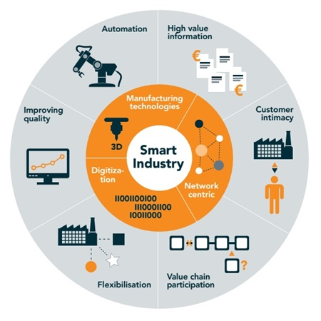

Elke week wordt er een blog geschreven over het verloop van het project. Hier wordt de meest recente blog weergegeven. De
oudere blogs vindt u hier .
Projectweek 9
Deze week willen wij het in onze blog een keer niet uitgebreid hebben over de fysieke 5S implementatiestappen en de daarbij behorende onderzoeken maar willen
wij het hebben over ‘’Smart Industry’’ en hoe wij Smart Industry implementeren binnen onze opdracht.
Om te beginnen is smart industry een veel gebruikt begrip en er is nogal vaak verwarring over wat Smart Industry nu precies inhoudt. Wij hebben daar de
volgende visie op: Smart Industry is het gebruik van slimme technieken om bepaalde processen te optimaliseren en meer waarde te creëren voor de klant. Nu
kan dit alsnog over komen als een niet tastbaar begrip en daarom proberen we het aan de hand van de volgende voorbeelden uit te leggen hoe wij Smart Industry
toepassen tijdens ons project.
 Allereerst kijken wij door een Smart Industry bril naar processen. Dit betekent dat wij zoeken naar dingen die sneller kunnen of nu nog inefficiënt zijn.
Vaak zijn routinematige taken en controletaken gemakkelijk over te nemen door een robot of machine. Een van de processen die we hier geïdentificeerd hebben
is het bijhouden van de voorraad gereedschappen en materialen die nodig zijn voor het productieproces.
Wij kijken ook naar dingen die uit de oude theorie als ‘’normaal’’ worden beschouwd (de eerste lean/5s-trajecten komen alweer uit de jaren 80) maar met de
huidige technologieën gewoonweg slimmer kunnen. Een mooi voorbeeld hiervan is een smartboard in plaats van een whiteboard. Bij een smart board kun je meteen
de koppeling maken naar de directie en wordt de informatie meteen verspreid naar alle belanghebbenden, waar ze ook mogen zijn op dat moment. Dit heeft vele
voordelen omdat er eerst proactief naar het whiteboard op de productie afdeling toe moest worden gelopen en dit vergroot de barrière voor het management om
snel te kijken of ze nog wat kunnen betekenen voor de werkvloer.
Het laatste voorbeeld waarin wij jullie mee willen nemen is het in kaart brengen van de looplijnen van het personeel. Een Smart Industry bril is niet altijd
de beste bril, dat blijkt maar weer uit dit voorbeeld. De looplijnen in kaart brengen (om te kijken of alle werkbanken op de efficiëntste plaats staan) is
iets wat redelijk gemakkelijk gedaan kan worden d.m.v. camera’s. Echter zijn er bepaalde stukken regelgeving die deze optie verbieden. Dit heeft o.a. te
maken met de privacy van de werknemers, iets wat wij goed kunnen begrijpen.
Er zijn natuurlijk nog veel meer mogelijkheden met Smart Industry en de reden waarom wij slechts een advies geven in plaats van het meteen implementeren is
het investeringsbudget. Dit budget komt pas per 2020 vrij en daarmee illustreert het wel de plek van Smart Industry binnen bedrijven. Alles is mogelijk
alleen moeten er vaak keuzes gemaakt worden omdat alles aanschaffen gewoonweg veel te kostbaar is.